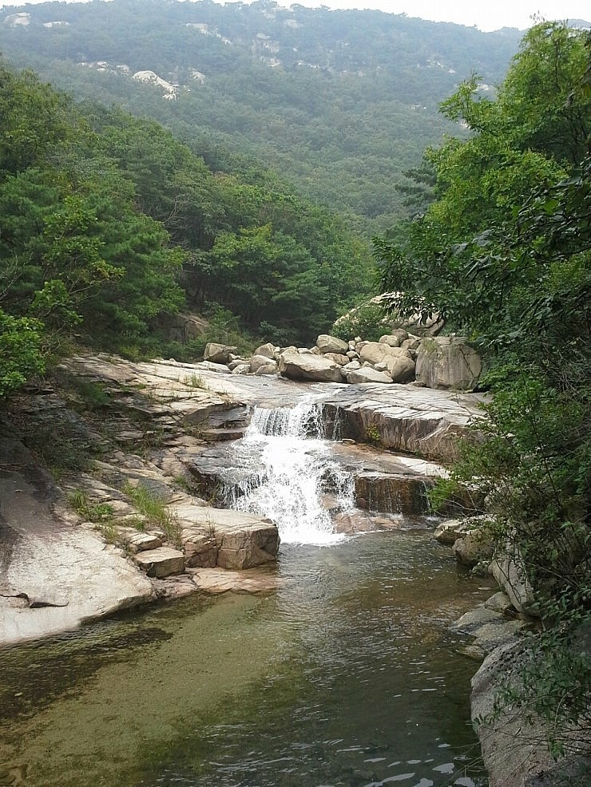

SECTION 1: Route Options
1. 차량별 10단계 통합 연속 이동 루트
더 뉴 EV6 (우철)
136km
10:45
30분
1. 강서 출발
EV6 출발 ➔ 고속
11:15
20분
2. 신림역 픽업
상헌&지원 탑승
11:35
55분
3. 서초 픽업
민국 탑승 ➔ 순환
12:30
🍚 1h
4. 점심 (만포면옥)
입구 맛집 점심
13:30
🌊 4.5h
5. 🌲 송추계곡 힐링
물놀이 & 산책
18:00
🍖 1h
6. 저녁 (송추밤나무)
백숙/소갈비 저녁
19:00
55분
7. 귀가 출발
19시 출발 (순환)
19:55
20분
8. 서초 드롭
민국 자택 하차
20:15
30분
9. 신림 드롭
상헌&지원 하차
20:45
🏁 도착
10. 강서 귀가
우철 최종 도착
SECTION 2: GIS Dynamic Map
2. 인터랙티브 동선 지도
스텝별 핀 탐색기
10 Nodes
SECTION 3: Destination
3. 송추계곡 안내

📍 네이버 공식 포토 (G9r23LFN)
송추계곡 (양주시 장흥면 울대리)
경기 양주시 장흥면 울대리 (북한산 국립공원 송추지구)
북한산 국립공원 내에 위치한 수도권 대표 청정 계곡입니다. 맑고 깨끗한 계곡물과 울창한 소나무 숲 산책로가 우수하며, 계곡 상류 물놀이 구역과 맛집거리가 조성되어 있습니다.
SECTION 4: Gourmet Directory